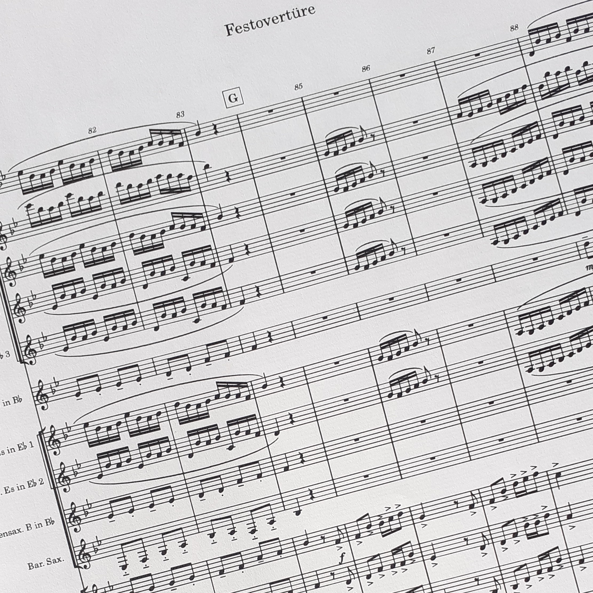

About me

I was born 1996 in Cologne and was introduced to music by my parents at an early age. I took some piano lessons in elementary school but never got far as a pianist. Later I discovered the trumpet and fell in love with the instrument quickly. As a teenager I tried myself at composing music. Since then I have been improving constantly. I mainly write music for wind orchestra and brass band.
Works
Here I proudly present to you the pieces of music that I have written so far. All pieces are available for free but I would appreciate a small donation.
Commission
If you would like to commission a piece or an arrangement please get in contact with me.
Tutoring
If you want advice on how to improve as an arranger and composer please get in contact with me and I will try to make time for you.